Given the IVP of Eq. 6, and a time step h, and the solution yn at the nth time step,
let's say that we wish to compute yn+1 in the following fashion:
| k1 = hf(yn,tn) | |||
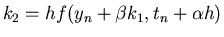 |
|||
| yn+1 = yn + ak1 + bk2, | (12) |
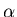
, , a and b have to be evaluated so that the resulting method has a LTE O(h3). Note that if k2=0 and a=1, then Eq. 13 reduces to the forward Euler method.
Now, let's write down the Taylor series expansion of y in the neighborhood of tn correct to
the h2 term i.e.,
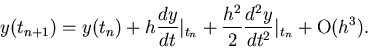 |
(13) |
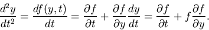 |
(14) |
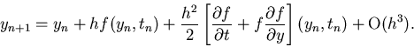 |
(15) |
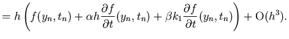 |
(16) |
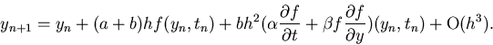 |
(17) |
Comparing the terms with identical coefficients in Eqs. 16 and 18 gives us the following system of equations to
determine the constants:
| a+b=1 | |||
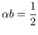 |
|||
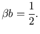 |
(18) |
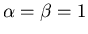
and a=b=1/2. With this choice, we have the classical second order accurate Runge-Kutta method (RK2) which is summarized as follows.| k1 = hf(yn,tn) | |||
| k2 = hf(yn+k1, tn + h) | |||
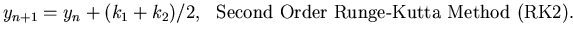 |
(19) |
In a similar fashion Runge-Kutta methods of higher order can be developed. One of the most widely used methods for the
solution of IVPs is the fourth order Runge-Kutta (RK4) technique. The LTE of this method is order h5.
The method is given below.
| k1 = hf(yn,tn) | |||
| k2 = hf(yn+k1/2, tn + h/2) | |||
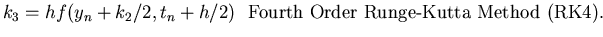 |
|||
| k4 = h(yn+k3, tn + h) | |||
| yn+1 = yn + (k1 + 2k2 + 2k3 + k4)/6. | (20) |